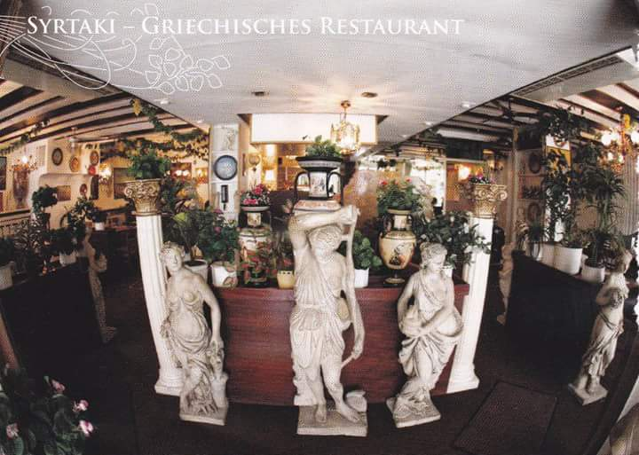

Im Restaurant SYRTAKI in Karlsruhe bieten wir Ihnen, seit 1988, ausgezeichnete griechische Küche in sympathischer Atmosphäre.

Letztes Update: 08.06.2021
Liebe Gäste,
das Restaurant ist wieder geöffnet jeden Tag, es gelten die normalen Öffnungszeiten.
Mehr Infos
• Bitte vorher Reservieren.
• Zutritt nur mit Maske.
• Sie müssen einen negativen Corona Test vorzeigen.
•SYRTAKI TEAM•
SCAMPIS (gegrillt)
GYROS
KALAMARIS (gegrillt)
LAMMHAXE (Aus dem Backofen)
OKTOPUS (gegrillt)
HELLAS-TELLER
GEBRATENE AUBERGINEN UND ZUCCHINI
RINDERLEBER